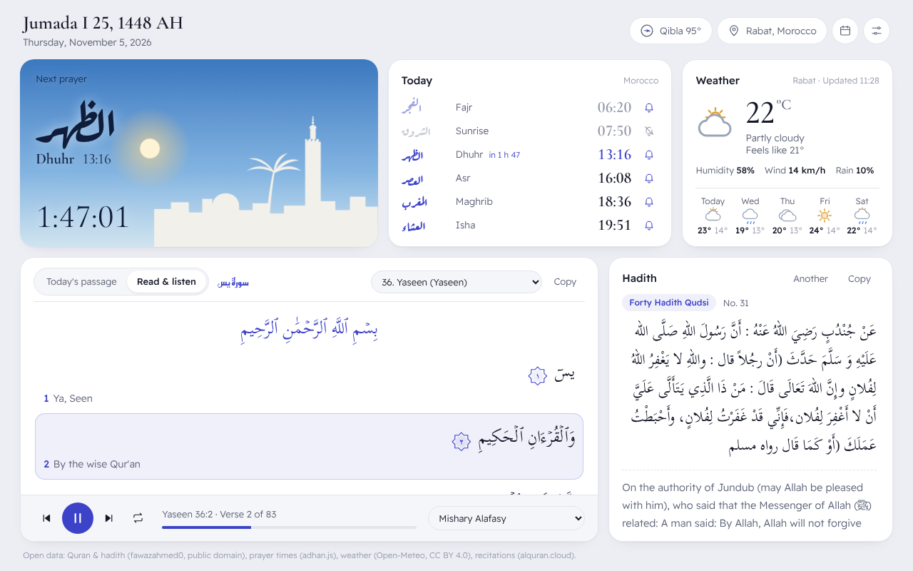

Prayer times and adhan alerts
16 calculation methods, including Morocco (Ministry of Habous). A live countdown, a notification at each prayer and an optional reminder before it.
الصلاة أولا
Accurate prayer times for where you are, with adhan notifications. A Quran reader with verse-by-verse recitation, Sahih al-Bukhari and Sahih Muslim, and the weather. Open a tab and the next prayer is right there.
Free · No account · No ads

This is the card you'll see on every new tab, running live on this page. Pick a city or use your location. The times are calculated in your browser, and nothing is sent anywhere.
Each city uses the method most common there. In the extension you choose from 16 calculation methods and turn on the notifications you want.
Salat First turns Chrome's new tab into a calm dashboard. One glance tells you how long until the next prayer, and the Quran is always a click away.
16 calculation methods, including Morocco (Ministry of Habous). A live countdown, a notification at each prayer and an optional reminder before it.
All 114 surahs in the Uthmani script, with English or French translation. Tap a verse to hear it from one of 15 reciters.
Sahih al-Bukhari, Sahih Muslim, An-Nawawi's Forty and Forty Hadith Qudsi, in Arabic with translation. Copy one to share it.
Current conditions and a 5-day forecast for your location, in °C or °F. Turn it off if you don't need it.
The Qibla direction, Hijri and Gregorian dates, and a monthly timetable to plan ahead.
The countdown and today's times in a popup, with a badge on the icon in the final hour before each prayer.
The next-prayer card moves from dawn to day, then dusk and night, with the real phase of the moon. Light and dark themes.
English, French and Arabic. The Arabic interface reads right to left, all the way through.
No account, no ads, no analytics. The developer never receives any of your data. Prayer times and the Qibla are calculated on your device.
Install Salat First from the Chrome Web Store. It's free.
Open a new tab and allow your location, or search for your city instead.
Pick the calculation method your mosque follows, your language and the prayers you want to be notified about.
Free, with no account and no ads.
Yes. There are no ads, no subscriptions and no account to create.
On your device, with the astronomical formulas of the open-source adhan-js library. Choose the method your local mosque follows from 16 options, such as Umm al-Qura, the Muslim World League, Egypt, North America (ISNA) and Morocco (Ministry of Habous).
Prayer times, the Quran text and the hadith are bundled with the extension and work without a connection. The weather, city search and recitation audio need the internet.
At each prayer time, Chrome shows a notification, with an optional sound. You can also get a reminder before the prayer. Notifications appear while Chrome is running.
Yes, that's where the dashboard lives. To get Chrome's default new tab back, turn off or remove the extension in chrome://extensions.
English, French and Arabic, with a fully right-to-left Arabic interface. The Quran is shown with an English or French translation.
None. Your settings stay in Chrome and nothing is sent to the developer. The privacy policy explains each service the extension contacts, and why.
Open an issue on GitHub. Bug reports, ideas and translation fixes are all welcome.
Salat First has no ads and collects nothing. If it helps you pray on time, you can help keep it maintained and improving.
«مَن دَلَّ على خيرٍ فله مثلُ أجرِ فاعلِه»
“Whoever guides someone to goodness has a reward like the one who does it.”
Sahih Muslim
Found a bug, a wrong time or a translation mistake? Open an issue on GitHub.
Open an issue